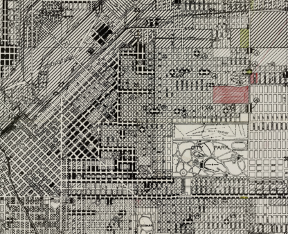
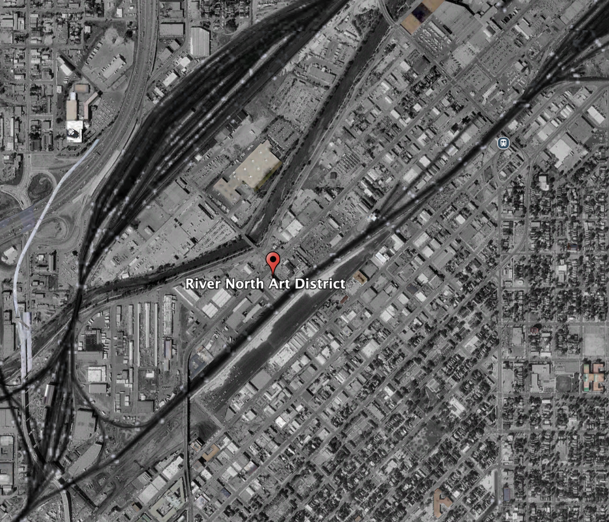
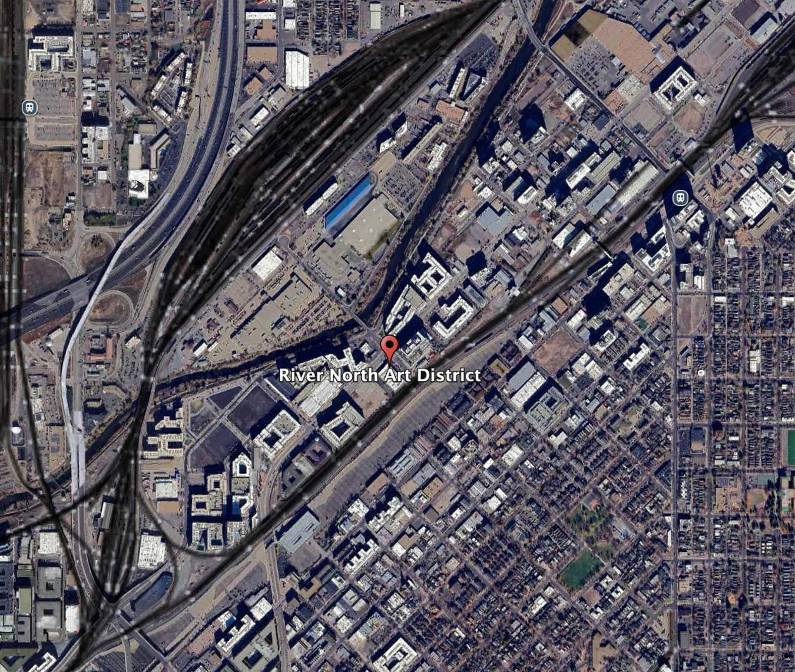

The Timeline
Railroads & Industry
RiNo's growth began around 1871, when Denver expanded north along new railroad lines. The area became a hub for warehouses, stockyards, smelters, and manufacturing, especially tied to agriculture and mining. Its location near rail corridors made it ideal for moving goods, not for housing, so it developed as a mostly industrial district with working-class labor nearby.

Decline & Disinvestment
After World War II, many industries left or modernized elsewhere, and rail use declined. Factories closed, buildings were abandoned, and the area saw economic disinvestment. Zoning kept it industrial, which limited residential or commercial reinvestment and left many large brick warehouses underused.

The Art Began
Cheap rents and big open buildings attracted artists and makers looking for studio space. Murals, galleries, and informal creative spaces started appearing, slowly shifting the district's identity from purely industrial to arts-driven reuse. This is when the name RiNo Art District began to stick.

Rapid Redevelopment
Once the arts scene gained attention, developers followed. Breweries, restaurants, apartments, and offices moved in, and many old warehouses were converted into mixed-use buildings. Public art became a defining feature, but so did rising rents and displacement, pushing out many of the artists and longtime industrial businesses that helped spark the revival.
